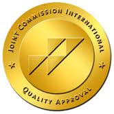

SPARK SEARCH
Organised by the joint comission International
| Spark Hospitals | SPARK SEARCH |
Organised by the joint comission International |
Contact us on Social Media
|
HOME
PATIENT CARE
MEDICINE
DOCTORS
HEALTH TIPS
APPOINTMENT
REGISTRATION
LOGIN
ABOUT
| Spark Hospitals gives some tablets for health for a balanced diet.All in all,
it is time for change. Healthy persons are the pillars of both their families and of society. Not only should they be informed how to stay healthy, but also that it is their right to do so; healthcare must be accessible to them. Medical supervision both before and during their pregnancy is crucial. Cordaid works on improving this for all women.The time has come to make healthcare accessible to all people regardless of whether they live in rich or poor areas. The approach used tightens controls and enables patients to take part in deciding their own treatment. In addition, staff remuneration has been made dependent on the achieved results in order to motivate staff to go the extra mile. An approach is called for that not only limits patient contribution to healthcare but also improves its accessibilityIn June 2015 during the MA4 Health Summit in Washington the roadmap for Health measurement and accountability was adopted. However, Cordaid esteems that the roadmap is not paying enough attention to specifics of fragile contexts. An entire different and new roadmap should be developed to ensure that the gap between the stable and fragile countries will not become too big to leap.Maestros Electronics & Telecommunications Systems Limited with over 20 years experience in design, development and Manufacturing Company in India focusing on creating .Tablets are solid dosage forms usually containing active pharmaceutical ingredient and excipients in powder, crystalline or granular form with or without diluents which is prepared either by moulding or compression process. They are solid, biconvex or flat in shape and vary in size, shape and weight which is depends on the medicaments which are used for preparation. They are also varying in hardness, disintegration; dissolution characteristics and thickness depend on their intended use and method of manufacture. Now, clinical specialists can make their services more accessible across the healthcare ecosystem, to broader audiences & cost effectively reach more patients virtually anytime, anywhere. Additionally, physicians can now monitor patient’s health more closely & frequently to achieve better clinical outcome which reduces the gap between patient and Care Giver in effective manner. |
||||
Patient Care Key Medical Procedures Education Centres of Excellence Research
Find a Doctor IVF & Infertility Treatment Medical Courses Orthopaedics Spark Research and Innovations
Service Excellence Cosmetic / Plastic Surgery Web Broadcasts Nephrology and Urology Spark Hospitals Research Foundation
Patients Speak Bone Marrow Transplant Collaborative Forums Bariatric Surgery Spark Medical Journal
Value Added Services Oral & Maxillofacial Surgery Let's Talk Health Cardiology
Pay Online Hand MicroSurgery Spark Med Skills Gastroenterology
G Scan - Open Standing MRI Scan What's New Spine Surgery
320 Slice CT Scan Cancer/Oncology
Hip Arthroscopy Transplants
Minimally Invasive Cardiac Surgery
Knee Replacement Surgery